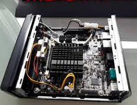
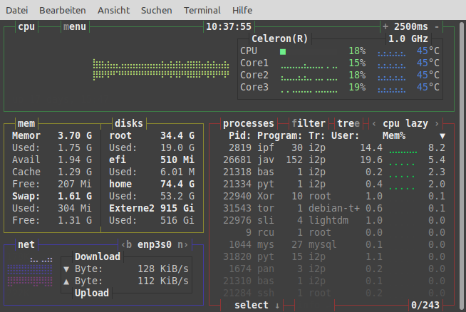

Neue Server Hardware

Die komplett neue Server Hardware, besteht aus einem neuen Mini-ITX-Mainboard von Gigabyte, welches komplett mit 4 Gb. Ram, plus Intel Celeron j3455 sowie einer 128Gb. SSD bestückt ist, sowie folgenden Komponenten
- EAN 4719331801496
- Hersteller-Nr. GA-J3455N-D3H
- Sockel integriert
- Prozessor Bezeichnung Intel® Celeron® Prozessor J3455 (1,50 GHz)
- Anzahl Prozessorkerne 4
- Taktfrequenz 1500 MHz
- Cache Level 2 2000 KB
- max. Leistungsaufnahme 6 Watt
- inkl. CPU-Kühler Ja
- Steckplätze PCI 1
- BIOS 64Mbit AMI UEFI
- EFI-BIOS Ja
- Formfaktor Mini-ITX
- Netzteil ATX12V (24-Pin + 4-Pin)
- Speicher maximal 16 GB
- Anzahl der Sockel 2x DDR3 (SO-DIMM)
- unterstützter Speichertyp SDRAM-DDR3
- unterstützte Standards DDR3-133. DDR3-1600, DDR3-1866
- Kanäle 2
- Speichercontroller in CPU Ja
- Anschlüsse (extern) Tastatur (PS/2) 1
- Maus (PS/2) 1
- USB 3.0 2
- USB 2.0 2
- Seriell 2
- VGA 1
- HDMI 1
- Mikrofon 1
- Line-In 1
- Line-Out 1
- RJ-45 2
- Anschlüsse (intern) SATA 4
- 4-polig PWM-Lüfter 1
- 3-polig Lüfter 1
- Anschlüsse (optional) USB 3.0 1
- USB 2.0 2
- Parallel 1
- TPM Ja
- SATA-Controller integriert
- AS Media 1061
- Grafik Intel HD Graphics
- Sound Realtek ALC887
- LAN Realtek GbE
- Abmessungen Breite: 170 mm x Tiefe/Länge: 170 mm
Features Windows 10 ready Hier rennt Linux, kein WinDaus ! Weitere Informationen Der HDMI-Anschluss unterstützt eine Auflösung von 3840 x 2160 bei 30 Hz.
Damit sind Dinge wie ….
- I2P-Router http://eddysblog.i2p
- IPFS ipns/QmbpZHWRAwJ4MaYLog3NjbHxvDc5Ney1qWLXEPwSGXcJc9/
- Zeronet eddyle.bit 14feUXtxkukdA9qutsHtKrAdXcYm5nnViu
- Tor http://w45jxacxizahnu6jjcycave56z3rxqthnsnwu5zcayidyngyqvhqzbyd.onion/
seit 8 Tagen wieder Online.
Das Mobo schlägt mit knapp 90 Euro zu Buche. Bestückt man das Teil mit 4 Gb. Ram plus einer 128 Gb. SSD und einem passenden Mini ITX Gehäuse plus externem Notebook Netzteil, liegt man bei knapp über 200 Euro Anschaffungskosten.
Da das Teil ohnehin als Server rennt, spielen Grafik- oder Sound- Leistung absolut keine Rolle. Dank vorhandenem VGA Anschluss ließ sich der uralt Monitor (Nec Multisync LCD) zum Einrichten der Festplatte angestöpseln. Partitionieren, Netzwerkkarten einrichten usw.
Allerdings liegt der Stromverbrauch im Dauerbetrieb (bei ca. 10 bis 15 Watt) deutlich über dem eines auf der ARM-Architektur basierenden Raspberry PI. Nun ja, von nichts kommt halt auch nichts. Die CPU Temperatur schwankt im Schnitt zwischen 38 - 45 Grad. Ein en lüfter brauchts deshalb nicht. Das Mobo wird im Dauerbetrieb gerade mal handwarm.

Für knapp über 200 Euro bekommt man einen lüfterlosen und doch recht leistungsstarken Mini Server.